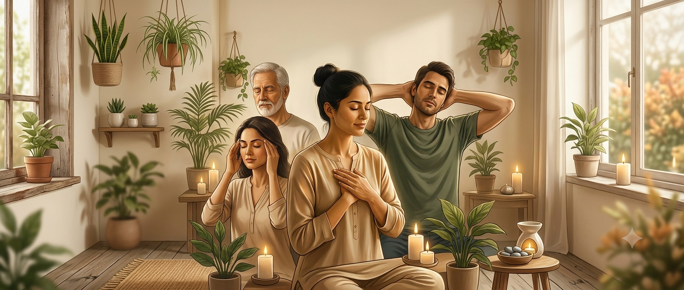

Pranic Self-Care
Learn to care for your energy, strengthen your inner balance, and support your everyday wellbeing. This session brings together a range of Pranic Healing-inspired self-care practices — from pranic exercises and physical breathing techniques to visualisations for self-healing, inner reflection, character building, affirmations, the Great Invocation and OMPH chanting.

The practices we'll cover
Pranic exercises — Simple exercises designed to support energetic circulation, vitality and overall balance.
Physical breathing practices — Breathing practices that encourage relaxation, awareness and a more settled state of being.
Visualisations for self-healing — Guided visualisation techniques to support your personal self-healing practice and cultivate greater awareness of your inner state.
Inner reflection — Create space to look within, recognise recurring patterns and develop greater self-awareness.
Character building — Explore conscious qualities and habits that support personal growth, emotional maturity and a more harmonious way of living.
Affirmations — Use purposeful positive statements to reinforce constructive thoughts, intentions and qualities.
Great Invocation — Experience the Great Invocation as a practice of invoking and directing qualities such as light, love and goodwill.
OMPH chanting — Explore OMPH chanting as a practice for creating greater inner stillness, focus and energetic balance.
What this practice offers
A simple way to care for yourselfDevelop practices that can become part of your everyday routine rather than waiting until you feel depleted.
Greater awareness of your energyLearn to become more conscious of how you feel, what affects your energy and when you may need to pause and restore.
Release and renewalCreate regular moments to let go of accumulated tension and cultivate a renewed sense of balance.
Support for emotional wellbeingDevelop greater awareness of your emotional patterns and learn practices that can support calm and inner steadiness.
Greater mental clarityCreate space away from constant mental activity and cultivate a more centred state of mind.
Personal growth & character developmentGo beyond relaxation by consciously working on the qualities, attitudes and behaviours you want to strengthen within yourself.
Positive inner conditioningAffirmations and reflective practices can help you consciously reinforce the qualities and intentions you want to cultivate.
A stronger sense of inner connectionThrough reflection, visualisation, chanting and conscious practice, develop a deeper connection with yourself.
A sustainable self-care routineTake away practical practices that can be incorporated into your daily life and continued independently.
How the session flows
Welcome & introduction
Begin by understanding what Pranic Self-Care means and why consciously caring for your energy can become an important part of everyday wellbeing.
Connecting with your energy
Develop greater awareness of your present state and how your physical, emotional and mental experiences can influence how you feel.
Pranic exercises & breathing
Learn and practise simple exercises and breathing techniques that can become part of your personal self-care routine.
Visualisations for self-healing
Explore guided visualisation practices that encourage greater awareness, inner balance and self-healing.
Inner reflection & character building
Turn inward and explore personal patterns, qualities and areas of growth — moving self-care beyond the physical and into personal development.
Affirmations
Learn how conscious affirmations can support the qualities, intentions and changes you want to cultivate.
Great Invocation & OMPH chanting
Experience these practices as part of creating a deeper sense of stillness, focus, goodwill and inner harmony.
Creating your personal self-care practice
Bring the different elements together and understand how you can incorporate selected practices into your own daily routine.
Questions & closing
An open opportunity to ask questions, clarify the practices and reflect on what you would like to continue exploring.
Common questions
Yes. The session is designed to introduce the practices in a simple and accessible way. No prior experience is required.
No. You don't need prior knowledge of Pranic Healing to participate.
The focus is on learning self-care practices that you can use independently as part of your personal wellbeing and inner development.
Yes. A key purpose of the session is to introduce simple practices that you can continue incorporating into your everyday routine.
No. You can gradually discover which practices resonate with you and develop a routine that feels practical and sustainable.
That's completely fine. Everything will be guided, and you can follow at your own pace.
Self-care isn't only about feeling relaxed. Character building brings attention to the qualities and behaviours we want to consciously develop, supporting deeper personal growth.
They are spiritual practices included in the session as part of cultivating qualities such as goodwill, inner stillness, focus and harmony. They will be introduced and guided during the session.
You can approach the session as an opportunity to learn and experience the practices. The spiritual elements will be introduced respectfully, without requiring prior familiarity.
Come comfortably and with an open mind. No special equipment or previous preparation is required.
Take your wellbeing into your own hands
Self-care doesn't have to wait for the moment you feel exhausted. It can begin with a few conscious moments each day — to breathe, to release, to reflect, to restore, and to reconnect with yourself.
Get in touch